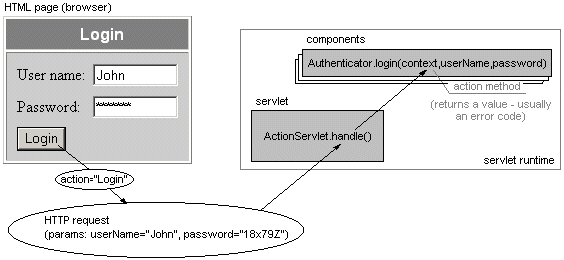

Basic information
ActionServlet provides an easy mapping of user actions (HTTP requests) to
methods of Java components together with automatic conversion of HTTP parameters to the
values of Java types.

To simplify the development with ActionServlet, you can use ASWizards for JBuilder:
With these wizards you can easily create the basic structure of your web application.
Documentation
Download
|
|
|
*or any servlet container compatible with Servlet specification 2.2 and higher
|
Latest news
History
|
24.2. 2000: version 0.42: first public release |
|
14.3. 2000: version 0.43: small doc fixes |
|
26.4. 2000: version 0.44: added newSession() method |
|
14.8. 2000: version 0.45: tiny changes |
|
31.1. 2001: version 0.5 Beta: introduced the concept of components, XML config,
easy HTML forms distinguishing and more! |
|
14.6.2001: version 0.5: few enhancements and changes, new tutorial, bug and doc fixes |
|
8.7.2001: version 0.52 and 0.53: see doc\whatsnew.txt |
|
24.7.2001: version 0.52.1 (bugfixes only) and 0.54: see doc\whatsnew.txt |
|
17.9. 2001: ASWizards 1.0 for JBuilder released |
|
ActionServlet 0.44
|

|
References
- [1] Bloch, C.: Java Tutorial: Servlets
- [2] Wells, J.: WebMacro documentation
- [3] Nic, M.: XML Tutorial